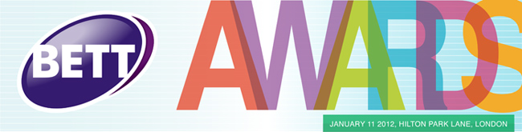

About Us | Contact Us | Latest Newsletter | Diary | IWB Research | Projects | New Visitors
MirandaNet International Workshop in Prague, June 6 - 9, 2012
A MirandaNet professional knowledge building event in educational innovation led by a partnership between the Czech Miranda, the MirandaNet Fellowship, Poskole and the Future Learning Research Centre, University of Bedfordshire:
"What does the 21st century teacher need to know about digital technologies, and why? And how will their prowess be assessed?"
 MirandaMod
3rd May 16:30 – 19:30 on physical and virtual learning spaces
MirandaMod
3rd May 16:30 – 19:30 on physical and virtual learning spaces
“One of the greatest changes can be seen in the lives of children and young people, who are at ease with the world of technology and who communicate, socialise and participate online effortlessly….. Yet the classrooms of today don’t reflect these changes.” Michael Gove 2011
This MirandaMod will address issues arising from this statement.
Next MirandaNet Icatalyst workshop 3rd May 13:00-15:30 for educators on the value of a MirandaMod for innovative learning
The MirandaMod events series 2012: March 1st and May 3rd
In partnership with BCSE, BESA, InspireWords, Immersive Education, NelsonThorne, Radiowaves and Steljes
Following on from the success of the first event in November 2011, the MirandaNet Fellowship professional community invites educators to join us, face to face or online, to discuss the role of digital technologies in enriching learning. Policy makers, senior managers, teachers, student teachers will all benefit from participating in these two events. Chris Yapp who is leading the sessions is also researching for his new book, Persuasive Learning, in which ideas from educators at these events will be acknowledged.
These events will be held at the Bedford Campus of Bedfordshire University, and will last from 16:30 to 19:30.
MirandaNet associate Radiowaves win the BETT12 ICT Company of the Year Award
We are extremely pleased to announce that Radiowaves won ICT Company of the Year (Less than £1 Million) at the 2012 BETT Awards in London.
This is a fantastic achievement for Radiowaves and MirandaNet are very proud to be associated with this company.
Radiowaves has won the ‘ICT Company of the Year’ at BETT, the world’s largest technology in education show. The judges, including key government agencies, teachers and local authority representatives, commented:
“Radiowaves is an innovating company which has taken an unusual route to generating revenue which combines the best of traditional business practises along with sticking to the spirit of Web 2.0 innovations. Its combination of user generated material and corporate links makes an excellent model for other companies.”
Ray Barker, director of BESA added:
"The BETT Awards are now the standard by which the UK and international
education industry can recognise and reward valuable and innovative resources."
- Read more about Radiowaves on MirandaNet
- Follow up what happened at the Live Workshope on the MirandaMod Wiki
Achievement for All Live Workshops in Gallery Room 1
MirandaNet at BETT12, 11th – 14th January 2012
Christina Preston and members of the MirandaNet team will be on hand in Gallery Room 1 from 11:00 - 18:00 each day. Gallery Room 1 will also be the location of the Live Workshops.
The MirandaNet Fellowship with Achievement for All will be running eight Live Workshops or 'Unconferences' with a series of partner organisations. Eight sessions, recorded in several different modes, will lead to the creation of a web-based resource to support teachers entering the second phase of the Achievement for All project.
- Full details of these Workshops on our BETT12 Programme page
- Follow up what happened at the Live Workshope on the MirandaMod Wiki
 MirandaNet
Group on flickr!
MirandaNet
Group on flickr!
MirandaNet Fellow Theo Kuechel has kindly added a MirandaNet group to the photo-sharing site flickr. Theo says:
We welcome all contributions related to MirandaNet and invite you to share your photos and short videos. Examples would be MirandaMods, Conferences, and trips and images relating to MirandaNet Research. We always encourage the use of a Creative Commons Licence wherever possible, and always include the MirandaNet tag, please.
MirandaMods
2011 - 2012
We have planned a series of MirandaMods for this academic year, the first of which will be held at the University of Bedfordshire on Wednesday 30th November 2011 at the University of Bedfordshire. Further details on the MirandaMods pages.
Designing education for the future as if it matters: Schools and Schooling in the Digital Age
30th November 2011 18:00 - 20:00 University of Bedfordshire
Theme contributors: Chris Yapp, Marilyn Leask, Christina Preston and John Cuthell
Achievement for All Website Launched
The Achievement for all website has been launched.
The Achievement for All pilot programme demonstrated that pupils with SEND have achieved significant improvement.
Schools involved in the pilot reduced persistent non-attendance by 20%, and participation in activities impacted positively on behaviour and learning in the classroom. On average, over the first 12 months of the project, SEND pupils improved in reading, writing and maths by over 1.5 National Curriculum sub-levels.
The Achievement for All programme will work with schools to support SEND and vulnerable learners in raising their attainment levels, and improving attendance, behaviour, peer relationships and participation in extra-curricula activities.
MirandaNet is proud to have been involved in the development of this project.
Go to the Achievement for All web site for more information and for a joining form.
BETT Awards 2012
January 11 2012 Hilton Park Lane, London
MirandaNet is proud to be supporting this major event.
There are now just a few days to go until the entry deadline for the BETT Awards 2012. Entries have been streaming in from companies wanting to highlight their innovative products and showcase their achievements.
ThinkQuest Competion 2012
Entry Deadline: April 25, 2012
MirandaNet Associate Oracle Education Foundation have been running an annual competion for several years now. The ThinkQuest Competition engages students to ssion Development, and several age groups, with valuable prizes to be won!
The competition is already open for applications, the entry deadline is Wednesday April 25, 2012, and the winners will be announced on June 20, 2012.
Further information about this competition...
BETT Awards 2012
January 11 2012 Hilton Park Lane, London
MirandaNet is proud to be supporting this major event.
There are now just a few days to go until the entry deadline for the BETT Awards 2012. Entries have been streaming in from companies wanting to highlight their innovative products and showcase their achievements.
CAL11 - The CAL Conference 2011
'Learning Futures: Education, Technology and Sustainability'
Manchester Metropolitan University, Manchester, UK 13-15 April 2011
CAL (Computer Assisted Learning) (www.cal-conference.elsevier.com) is one of the leading international conferences in the field of education and technology. It brings together researchers across all education sectors, from primary years, to informal learning, to higher education, and across a range of disciplines from psychology to computer science, media and cultural studies. MirandaNetters are contributing to this conference in a number of ways including contributing to a knowledge map:
If your browser allows iframes, you should be able to see a preview of the map below. Click on the 'full screen' button to open it in a new tab and to use the full functionality of MindMeister Maps. &
Achievement for All resources from the Education Show, Birmingham, March 17th - 19th 2011
The Government proposes the biggest reforms to special educational needs in 30 years
Recently the UK Coalition Government published a Green Paper consultation about proposed reforms to Special Education Needs:
Severasl MirandaNet Fellows attended the Education Show in Birmingham March 17th -19th where they considered the questions raised in the SEN Green Paper from the perspective of digital technologies in association with colleagues from the Department for Education and the Achievement for All, National Strategy. You will find the programme here for the free CPD events as well as registration details:
There were six workshops over the three days where they created digital maps so that all the participants can share their knowledge. The maps can be viewed at:
The topics with an ICT perspective were on:
- assessment and learning;
- classroom support;
- leadership;
- the future of SEN policy and SEND practice;
- educational disadvantage;
- parental engagement.
The MirandaNet team also ran the workshops on Thursday afternoon 17th March at 1300, when our topic was'ICT policy and practice in Achievement for All contexts’. In this workshop we paid tribute to what Becta has achieved and did some collaborative thinking about what the ICT community needs to do next.
Thursday March 17th
1000 – 1200: Achievement for All: policy and practice
Follow this link
for the Session 1 Concept Map
Follow this link for the Session 1 Presentation
1400 – 1530: ICT policy and practice in Achievement for All contexts
Christina Preston, John Cuthell and Leon Cych: MirandaNet Fellowship
Follow
this link for the Session 2 Concept Map
Follow this link for the Session 2 Presentation
Friday March 18th
1000 – 1200: Pedagogy
Follow
this link for the Session 3 Concept Map
Follow this link for the
Session 3 Presentation
1300 – 1530: Future views on SEN policy
Follow
this link for the Session 4 Concept Map
Follow this link for the Session
4 Presentation (1.2MB)
Saturday March 19th
1000 – 1200: Educational Disadvantage
Follow this link for the Session 5 Concept
Map
Follow this link for the Session 5 Presentation
(6MB)
1300 – 1530: Achievement for All: Impact and practice following the
Lamb inquiry
Sonia Blandford – National Director of Achievement for All
Follow this link for the Session 6 Concept
Map
Follow this link for the Session 6 Presentation
(0.9MB)
- Download Programme Details (Word 57Kb)
Archived News Items
- Archived news items: page 4
- Archived news items: page 3
- Archived news items: page 2
- Archived news items: page 1
MirandaNet News
Farewell to the old, greetings to the new!
This MirandaNet web site is now in archive, using the URL mirandanet.org.uk. A brand new site is available from our original URL mirandanet.ac.uk, but you will be able to browse this archive version (which itself contains archive material!) for the foreseeable future.
And it is not an entirely 'dead' archive! Most of the links which display old Members' details have been de-activated, along with the joining and logging in routines. The case studies and articles are still live, but can only be edited by the Admin. If any member wishes to withdraw their permission for any published item on the site, please contact the editor using the link below.
The main focus of MirandaNet now is the new site, where news and diary items will be published.
Thanks to everyone who has supported me in my editorship of this wonderful organisation over the past 15 years. It is time to hand over to younger blood.
Francis Howlett
Former MirandaNet Editor
10th May 2015
MirandaNet Diary
October 2024
No current diary items for October 2024.
Fellows Corner
Christina Preston is part author of this paper published in First Monday, a peer-reviewed journal on the Internet:
Theories and Models Of Online Learning, Caroline Haythornthwaite with Richard Andrews, Bertram C. Bruce, Michelle M. Kazmer, Rae-Anne Montague & Christina Preston, August 6, 2007 First Monday, Vol 12 No 8 Chicago IL, USA
[Archived items in Fellows Corner]
[Worried about viruses and hoaxes? View the latest information from Sophos]
New Visitors
MirandaNet welcomes new visitors. Follow this link for information on how to join the community.
A note about MirandaNet and Web Standards
All pages on the main MirandaNet site should meet the W3C Standards for CSS and HTML. In addition, we have striven to meet accessibility standards of at least 'Section 508', and ideally WCAG 1.0 Priority 3 or AAA standards. Some MirandaNet pages, including this page and the diary and news pages together with all the the members' profiles and eJournal entries, are interactive and can have items posted on them by members who may not be fully aware of these standards, and thus we cannot guarantee that all pages fully meet our goals. If you spot any errors, or have any comments to make on the accessibility of the site, please get in touch with us using the Contact MirandaNet links below.
 |
|  |
| 
[Back]